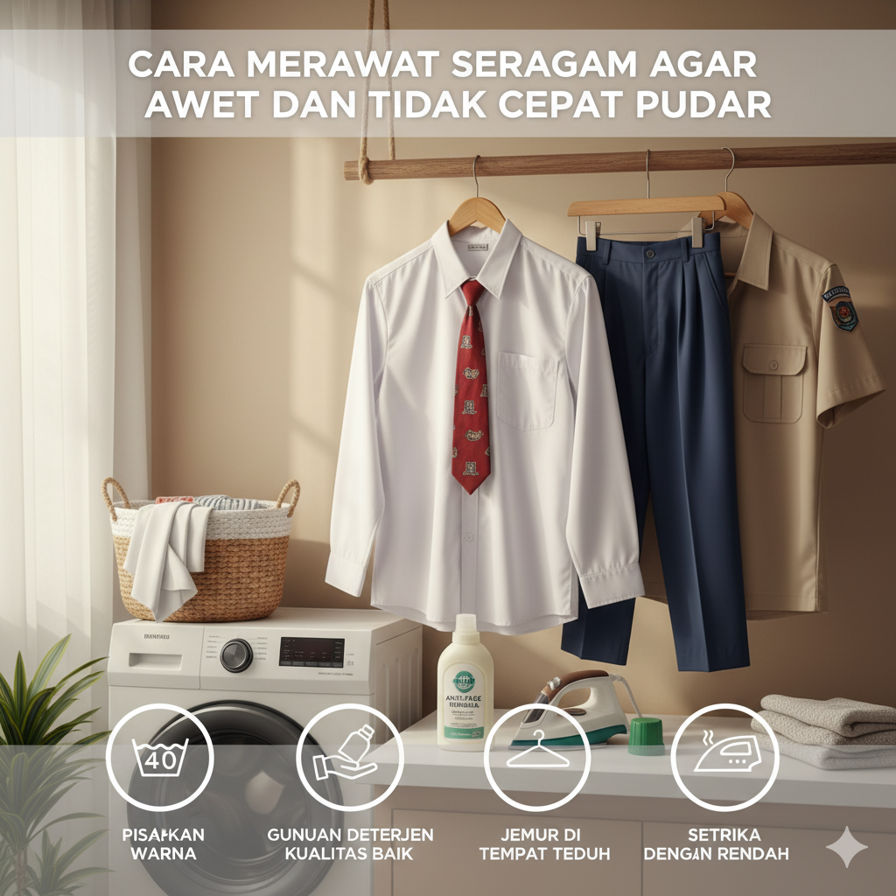

5 Tips Memilih Bahan Seragam yang Nyaman untuk Anak Sekolah
Ditulis oleh Tim Konveksi | 15 September 2025

Merawat seragam sekolah dengan baik adalah kunci untuk menjaga kebersihan, keindahan, dan ketahanan pakaian tersebut. Berikut adalah beberapa tips untuk merawat seragam agar tetap terjaga kualitasnya:
Berikut adalah tips praktis dari kami untuk membantu Anda Merawat seragam sekolah:
1. Pisahkan Warna
Sebelum mencuci seragam, pisahkan seragam berwarna terang dan gelap untuk mencegah pewarnaan yang tidak diinginkan. Hal ini penting untuk mencegah warna dari seragam yang gelap dapat bercampur dengan yang terang dan membuatnya terlihat kusam.
2. Gunakan Deterjen yang Lembut
Ketika mencuci, hindari penggunaan deterjen yang terlalu keras karena dapat merusak serat bahan. Ada baiknya menggunakan deterjen yang lembut atau sesuai dengan jenis bahan seragam. Pastikan juga untuk mengikuti petunjuk penggunaan deterjen yang tertera pada kemasan.
3. Hindari Pemutih
Pemutih dapat merusak warna dan serat bahan. Hindari penggunaan pemutih yang keras dan pilihlah bahan penghilang noda yang lembut jika diperlukan. Untuk noda yang sulit dihilangkan, Anda dapat mencoba merendamnya dengan larutan air dan cuka sebelum mencuci.
4. Gunakan Siklus Pencucian yang Tepat
Ketika mencuci seragam menggunakan mesin cuci, pilih siklus pencucian yang sesuai dengan jenis bahan dan tingkat kotoran pada seragam. Gunakan air dingin atau hangat sesuai dengan petunjuk pencucian pada label seragam.
5. Jemur dengan Hati-hati
Hindari menjemur seragam langsung di bawah sinar matahari yang terik. Sinar matahari yang terlalu panas dapat menyebabkan warna seragam memudar dan serat bahan menjadi rapuh. Jemur seragam di tempat yang teduh atau dalam keadaan terbalik untuk menjaga warna dan kelembutannya.
6. Setrika dengan Suhu Rendah
Jika perlu menyetrika, gunakan setrika dengan suhu rendah dan setrika seragam dalam keadaan terbalik. Hal ini untuk menghindari kerusakan pada motif, logo, atau bahkan warna dari seragam itu sendiri. Selalu periksa petunjuk setrika pada label seragam untuk mengetahui suhu yang tepat.
7. Simpan dengan Rapi
Setelah dicuci dan disetrika, Anda dapat menggantungkan atau melipat seragam dengan rapi untuk mencegah kerutan dan memudahkan penyimpanan. Hindari menumpuk seragam terlalu rapat agar udara dapat mengalir dengan baik dan mencegah seragam dari kelembaban yang berlebihan
Memilih bahan yang tepat untuk seragam sekolah adalah langkah penting dalam menjaga kenyamanan dan tahan lama pakaian tersebut. Dengan memperhatikan rekomendasi bahan dan tips merawat yang telah dijelaskan, diharapkan seragam sekolah dapat tetap terlihat rapi dan nyaman dipakai dalam aktivitas sehari-hari siswa.
Kembali ke Blog